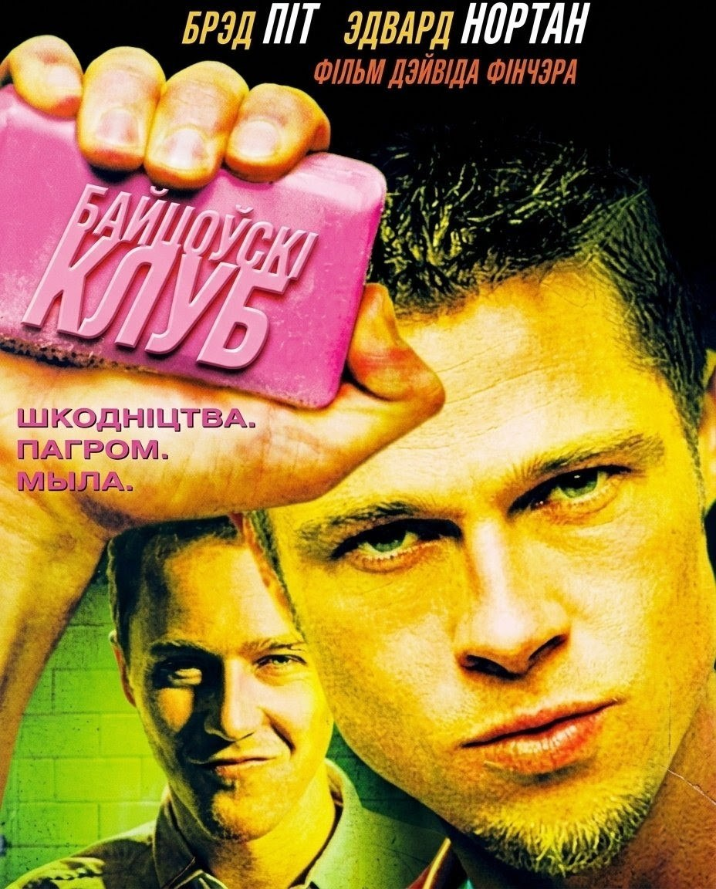

ГлядзецьБайцоўскі клуб
Fight Club | 1999 | Агучка | Мой родны гук
Супрацоўнік страхавой кампаніі пакутуе хранічнай бессанню і адчайна спрабуе вырвацца з пакутліва сумнай жыцця. Аднойчы ў чарговай камандзіроўцы ён сустракае нейкага Тайлера Дэрдена-харызматычнага гандляра мылам з перакручанай філасофіяй. Тайлер упэўнены, што самаўдасканаленне — доля слабых, а адзінае, дзеля чаго варта жыць, — самаразбурэнне.
Праходзіць трохі часу, і вось ужо новыя сябры лупяць адзін аднаго пачым дарма на стаянцы перад барам, і ачышчальны мардабой дастаўляе ім вышэйшую асалоду. Далучаючы іншых мужчын да простых радасцяў фізічнай жорсткасці, яны засноўваюць таемны Байцоўскі клуб, які пачынае карыстацца неверагоднай папулярнасцю.